2006
建立清华万博授权培训中心，培养网络方面高级人才
- 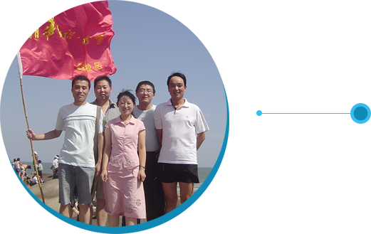
- “人人那个都说沂蒙山好”……这里人杰地灵，钟灵毓秀，三国时期诸葛亮，东晋时期王羲之，都在历史上独领风骚。近现代经过战争的洗礼，贫穷困扰着这片红色热土。教育改变生活、知识改变命运，我们办学的第一个地方选择了临沂。
- 2006年2月，我系系主任魏庆春与刘冠武合作成立了临沂首创网络有限公司。公司加盟清华大学旗下清华万博网络股份有限公司，致力于培养网络方面的高级技能人才。公司秉承“技能+学历=就业”的培养思路，让每个学生都能学到一技之长，找一份好的工作，脱离贫困是我们对每个学生与家庭的承诺。。
- 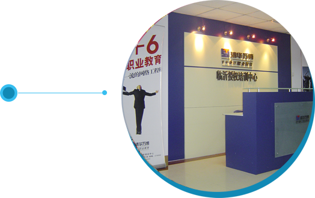
- 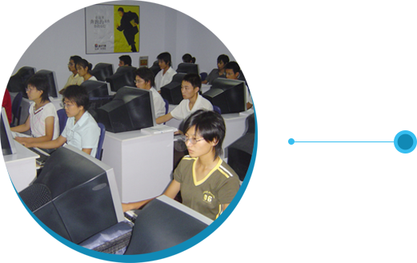
- “万事开头难”，第一年的招生工作也异常艰难，既没有品牌也没有口碑，而且还没有校舍，这对于普通老百姓来讲是很难相信并接受的。招生人员全部实行家访招生，真诚介绍IT行业发展前景以及我们的人才培养体系，就这样打动了47个学生，打动了47个家庭，学校也迎来了第一批学生。
2007
2007年 校企合作、新的起点
- 经过了一年的摸索，校领导总结出，要想将学校做好，不仅需要诚信办学，让学生真正学到技能找到工作，而且也需要一个适合学习以及让老百姓认可的真正的学校环境。为此，校领导魏庆春开始与临沂师范学院交流合作意向，4月份合作成功，学校迁入临沂师范学院工程学院，开启了校企联合的新起点。
- 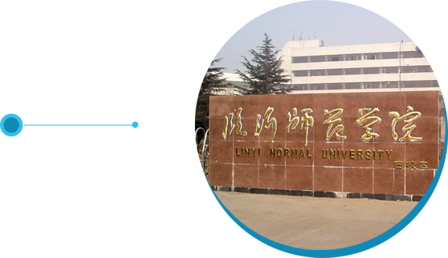
- 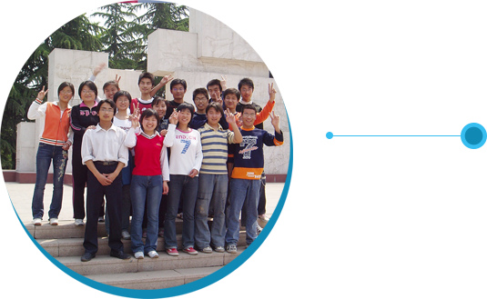
- 同年7月份，学校用时一个月，即完成了120人，4个班规模的招生，也验证了与高校合作的思路是非常正确的。学校稳定下来，学校开始安心抓教学课程由原来的网络方向转为就业面更广、就业速度更快、工资待遇更高的软件方向。同时提出“技能+学历+职业素养=就业”的教育模式，开始将职业素质培养作为学校的重要课程，为毕业生的成功就业打下坚实基础。
2008
成功验证“技能+学历+职业化=成功就业”培养模式
- 2008年初，在全国大学生就业难的社会背景下，我们也迎来了第一批学生就业。与大环境不同，47个学生全部顺利找到对口并满意的工作，成功验证了“技能+学历+职业化=就业”培养模式的科学性和先进性。极大的鼓舞了学校的每一位老师与学生，学校的凝聚力空前增强。
- 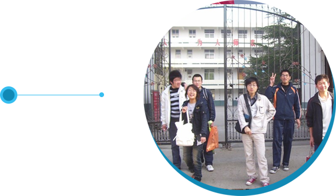
- 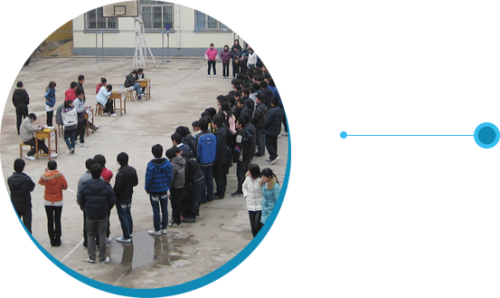
- 成功的路上总是充满坎坷，当大家还沉浸在学生顺利就业的喜悦和满足中时，突如其来的灾难给了所有人当头一棒。正值招生关键时刻，临沂师范学院由于拆迁突然终止与我们的合作，一周内我们必须搬出工程学院并且必须找到合适的办学地点。每个人都心生惶恐甚至绝望，这不仅是对招生的影响，学校能否挺过去能否活下来都变成未知数。魏校长临危不惧，一方面安抚在校师生，妥善安排正在进行的招生工作，同时积极寻求新的合作单位。苦心人天不负，第八天，即2008年8月5日，魏校长找到了新的合作单位——临沂教师进修学校（兰山电大），所有人欢呼雀跃甚至喜极而泣。受到搬迁的影响，年度招生最终仅完成112人。经过这次磨难，增强了我们战胜困难的决心和勇气，为日后学校的快速发展打下了坚实的心理基础。。
2010
新校成立，齐头并肩
- 经过四年的发展，学校趋于稳定，办学规模稳中有升。现有的校区资源配置已经不能满足发展的需求。学校开设谋求开辟第二校区。五岳独尊的泰山，雄踞海内外，泰山稳则天下安，且泰安高校众多，最终决定把泰安作为开辟新校区的首选城市。魏校长开始了艰辛的谈判之路。一次次奔走于泰安的各所学校，经过长期不懈的努力，最终和山东省交通运输学校成功合作。事实证明，这次合作为我们提供了迄今五年的休养生息的时间和空间，并创造了未来发展的众多机遇。
- 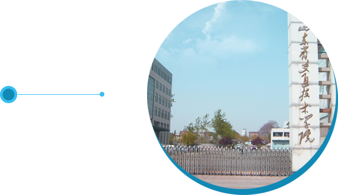
- 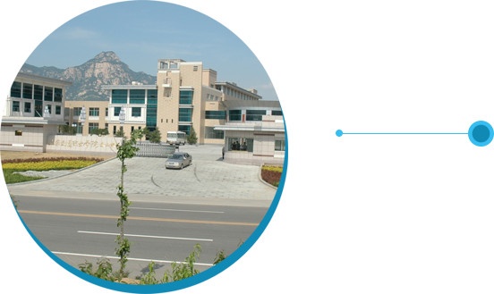
- 同年，临沂校区由兰山电大搬迁至山东省交通技术学院，与泰安校区同属于交通系统，为日后的校区合并做了铺垫
2013
校区合并，集中发展
- 2013年，是学校发展的第八个年头，经过8年的努力，再加上上级领导的大力支持和重视，学校迅速发展，两校区规模达到550多人。而临沂泰安两个校区同时运行，势必会造成部分资源的浪费为此学校领导研究决定，将两个校区合并，统一进行教育资源的整合。两校区合并后，学校把“先长久再求大后谋强”作为学校发展的重要目标，也为日后学校升级为正式高职专业做了充分的准备。
- 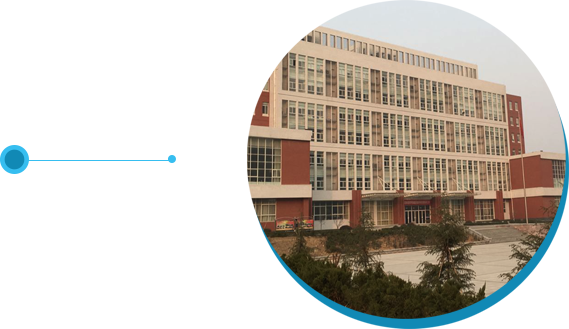
2015
风雨同舟，辉煌十年
- 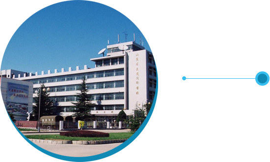
- 2015年是学校发展的第十个年头，我系正式通过教育厅审核，成为学院计算机应用技术统招专业，我系进入高速发展期。十年间，学校经历了风风雨雨，分分合合，唯一不变的是每个人对这份事业的热爱与执着。经过十年的发展，学校已经稳定并实现了质变，由原先招生困难到现今抢占名额；由原先的小班培训到如今成为学校的特色专业。十年，我们风雨同舟；未来，我们一路向前！。